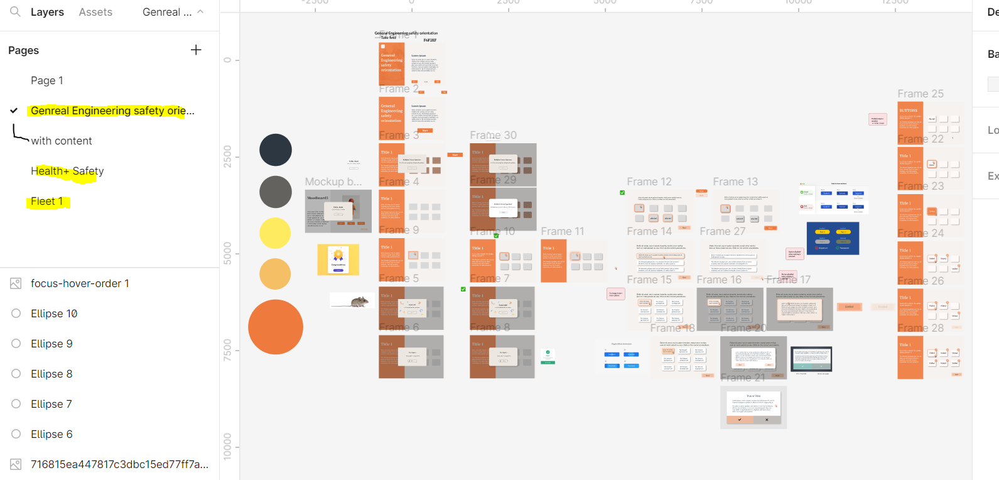
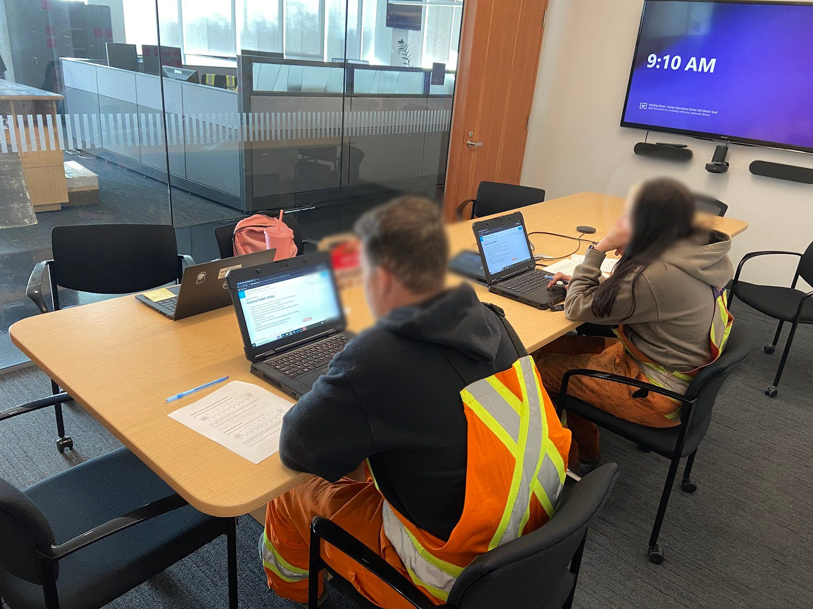

E-learning Module Design
Optimizing UI/UX for City of Surrey's training modules.
Project Overview
One of the key projects I undertook with City of Surrey was the redesign of nine e-learning modules for the City's Engineering Operations department. These modules were essential in training new hires efficiently, reducing the need for repetitive in-person training sessions.
Process Analysis & Design
To begin, I conducted moodboarding and storyboarding sessions to align with stakeholder expectations. A crucial step was learning Articulate 360, a new platform for me, with a focus on maintaining visual and functional consistency. This learning phase allowed me to explore the platform’s features and establish a strong foundation for the design process.
With a solid grasp of the platform, I proceeded to prototype in Figma, concentrating on creating intuitive user interfaces and seamless interactions. These prototypes served as blueprints for the final modules, which I then developed in Articulate 360. I carefully planned my timeline to include multiple rounds of user testing, understanding its vital role in refining the design and ensuring the project's success.

A visual representation of the design process, including moodboarding and Figma prototypes.
User Testing Stages
User testing was conducted in three carefully planned stages:
- Initial Feedback: I gathered initial feedback from the Learning & Development team, which helped identify any concerns or areas for improvement regarding the content and basic user interactions.
- Staff Testing: Next, I conducted testing with actual Engineering Operations staff, including both new hires and seasoned employees. This provided a well-rounded perspective and allowed me to refine the modules based on the feedback from real-world usage.
- Stakeholder Approval: Finally, I presented the modules to stakeholders for final approval, ensuring that their expectations were fully met.

Illustrative image of staff user testing in progress, gathering feedback from diverse users.
Impact & Outcome
Working on this project challenged me to adapt to different team dynamics and communication styles. Through this, I learned how important it is to stay flexible and manage expectations clearly when collaborating with others.
I also saw the value of user testing in action. Gathering real feedback helped me refine the interface and ensure the final product was not only functional, but also intuitive and engaging for users.
The redesigned modules led to a more efficient training process for the city, reducing the need for in-person sessions and saving valuable resources. It was rewarding to see how thoughtful design could create measurable impact in a real-world setting.